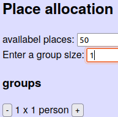
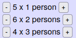

Suppose you want to invite your friends, relatives etc. to your birthday party - 50 persons together.
But you can only accomodate 30 of them...
Begin fair, you will draw sorts, so you put everyone's name on a folded paper in a jar.
Just before you start to draw the names, you realize that Melissa wouldn't like to come without her friend Astrid, and Uncle Fred needs to come with his son Abel, and your hockey team will never split up!
So you write 1 lot for Fred and Abel, 1 for the complete hockey team etc.
So you take names from the jar, sometimes 2 at a time, sometimes a whole family at once.
Finally, there two places left. But in the jar are still groups of 3 or more persons left.
What will you do if you draw such a group? If you ignore them it means that they don't have a fair chance to attend your party.
And you want to be fair.
Should you just put all the sorts back in the jar and start the process again?
Actually, this doesn't guarantee fair chances either. (proof)
The solution would be:
Enter the number of availabel places.
When you enter a group size, it will be added below.

You can change the number of groups by clicking on the "+" button.

Then click "find combinations".
You can export the results to a .csv file, which can be opened in Open Office Calc or Microsoft Excel, so you can check that everyone has an equal opportunity.